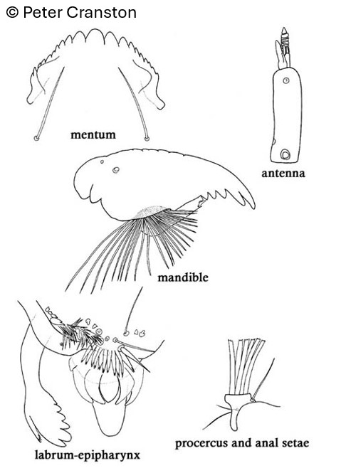

Syndiamesa (Kieffer, 1918)

Mentum
Dent médiane légèrement plus large que la 1ère dent latérale. 9-10 paires de dents latérales. Plaques ventromentales petites.
Mandibules
Dent apicale légèrement plus grande que la première dent interne.
Labre
SI en forme de « lamelle ». Peigne de l’épipharynx composé de 5 écailles allongées en forme de « casque ». Prémandibules avec 6 dents et une épine latérale ramifiée apicalement.
Ecologie
Les larves sont rencontrées dans les sources et les petits cours d’eau
Espèces recensées en France
3 : S. edwarsi, S. hygropetrica, S. nigra